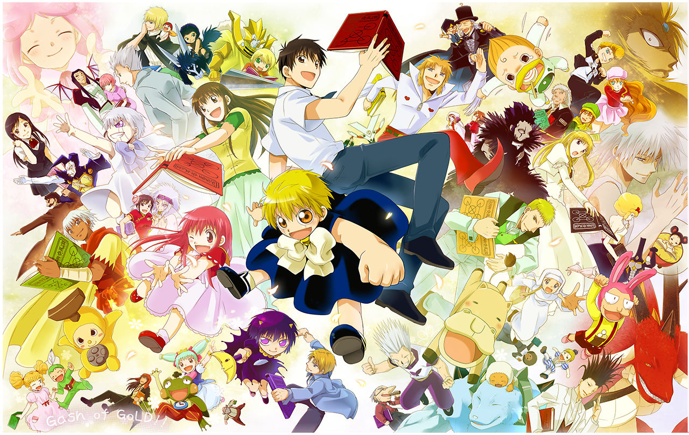

金色のガッシュ‼
あらすじ
モチノキ第二中学校の中学2年生・高嶺清麿は、MIT（マサチューセッツ工科大学）の論文
さえもたやすく理解するほどの頭脳の持ち主だった。しかし、その頭脳が周囲からの嫉妬を
生んでクラスに馴染めず、不登校を繰り返す鬱屈した日々を送っていた。そんなある日、清麿の
もとに謎の少年・ガッシュ・ベルが現れた。彼はイギリスで清麿の父・清太郎に助けられ、
恩返しとして日本までやってきた。ガッシュは過去の記憶を失っており、唯一の所持品は
謎の言語で記された赤い本だけだった。本に記された呪文を読むと電撃を発する力を持つ
ガッシュを危険視する清麿だが、協力して銀行強盗を撃退したことで打ち解ける。
このことを切っ掛けに清磨とクラスメートの関係も改善されるなど、ガッシュの来訪によって
清麿の生活は変わり始めた。
